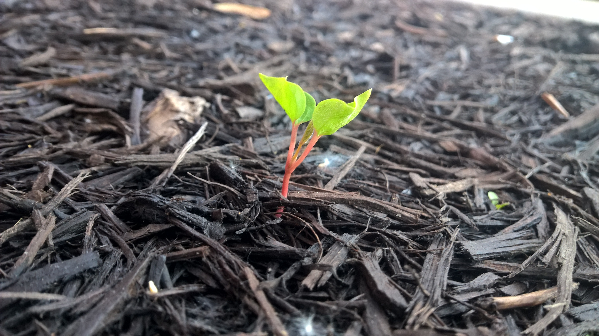

Be Yourself

Description
This is the long awaited recipe to be yourself. Follow the instructions and watch your peers gradually become obsessed over your uniqueness. However, please make sure you do not go overboard with it because it will result in you being an outcast.
Ingredients
- Awkwardness - 3 piece
- Strange hair color - purple works great here
- Shall we, instead of let's do this - everyday
- Stick family sticker with 7 kids and no wife on the back of Mustang - 1 piece
- Confidence - unlimited quantity
- Empathy - 1 piece
Steps
- Take strange hair color, for example purple, add confidence to it and mix it well
- Gradually add to the mix awkwardness, 1 piece at this point
- Dump into the mix shall we, instead of let's do this
- Let the mix sit and rest for a while, until you have purchased Mustang
- After the mix ready add the stick family sticker and again add confidence
- Finish it all by sprinkling empathy with the remaining 2 piece of awkwardness on top of it and enjoy the stares
MAIN PAGE